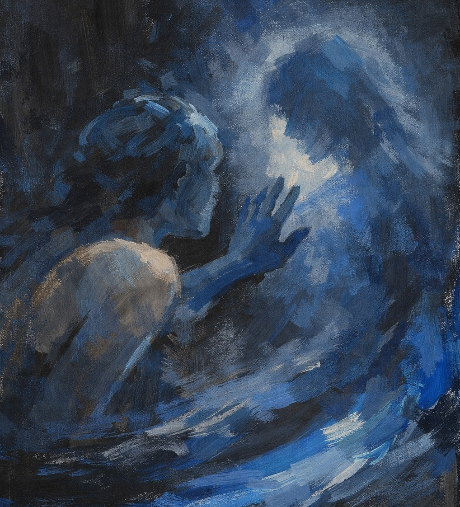

Longing is a scent born from separation. From the spark that ignites at reunion, from a rush of emotion where joy and restlessness exist side by side. Cardamom and pink pepper open the composition with warmth, life, and passion.
When two people sense that their time together is running short, every moment becomes more precious. Everything is felt more intensely, more deeply, more attentively.
Gradually, the passion softens. It turns into closeness and tenderness, into the silence shared only between two people who truly know each other. Dark patchouli and Turkish rose bring intimacy to the fragrance.
After the goodbye, something remains. In our memory, in the scent, on the skin. Vanilla, musks, labdanum and benzoin fade softly. Warm and gentle, like echoes of what we feel.
Longing captures desire, passion and their afterglow — the trace of closeness that lingers even after farewell.

Composition